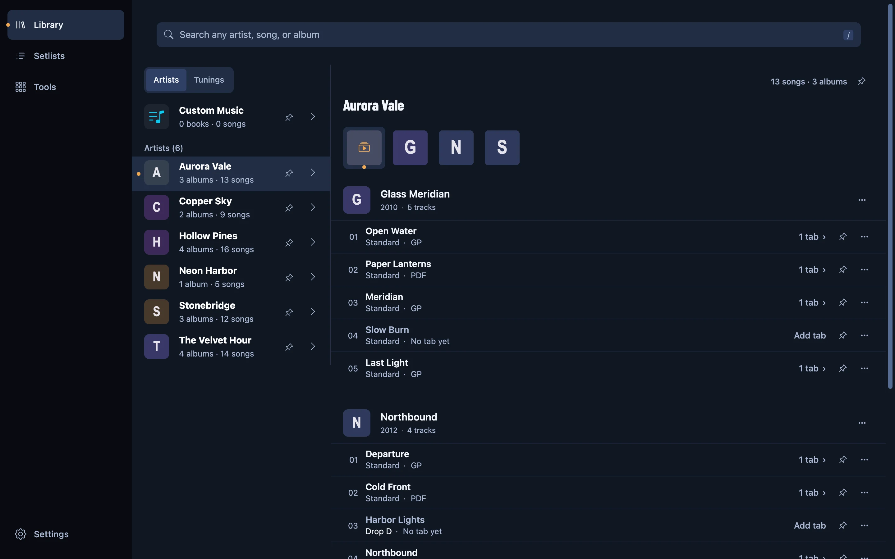

Your library
The library organizes tabs by song. Each song has an artist, an album and a place in the album's tracklist. You can link several tabs to one song.

Add songs, albums and books
You can add music in these ways:
- Search the catalog. Type a song, artist or album in the search field at the top of the Library. MajesticTab fetches the artist's discography, album covers, release years and track orders, so your songs match the real releases. Select Add album to add an album with its tracklist, or select Add song next to a track to add that song.
- Add custom music. If the catalog doesn't list your music, type its name in the search field and select Add song on the result Add "your text" as a custom song. In an empty library, you can also select Add custom music on the start screen.
- Add a book. Open an album, select Add book and choose where the PDF comes from. See PDF and text tabs.
If MajesticTab can't reach the catalog, you see Unable to reach music catalog. You can still add custom music.
Link a tab to a song
A song without a tab shows No tab yet. To link a Guitar Pro, PDF or text file, select Add tab. To search the web for a tab, select Find tab. See Getting tabs in.
A song can have several tabs. MajesticTab reopens the last tab you used.
Type a tab as text
To write a tab or lyrics yourself, select Add tab, or Add another tab on a song that has tabs, then select Enter as text. MajesticTab adds an empty text tab to the song and opens it with the Edit text window. Type or paste your text and select Save. The tab opens like any other text tab.
To change the text later, open the tab, open the Song menu and select Edit text. If you close the window before you save anything, it opens again the next time you open the tab.
Browse and search
The library views at the top let you switch between Library, Setlists, Tools and Tunings. To find a song, type in the search field. It filters songs that have tabs as you type.
Pin songs and artists
Pin a song or an artist to keep it easy to reach. Pinned songs show in Pinned songs.
Reopen recent tabs
Recently opened lists the tabs you opened last. To remove entries, select Edit recents list. To remove all entries, select Clear history.
Rename or remove a song
Use Rename to change a song's name. Use Remove from library to take a song out of the library.